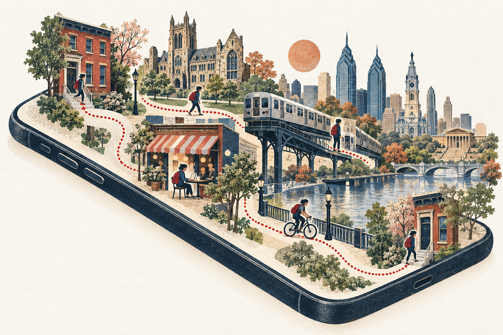

A travel survey of one.
One person. Every day. A little city of routines, detours, and discoveries.

Household travel surveys ask thousands of people to remember one weekday. I wanted the opposite: one person, every day, for years. HHT is a private iPhone app that quietly records where I go and rebuilds each day into visits, trips, modes and trip chains, then gets out of the way.
Built for exactly one user. Not on the App Store, no account, no server. The data never leaves the phone unless I export it.
What it does
A diary that writes itself, and a dataset underneath it.
Open the app in the evening and the day is already there: when I left, where I stopped, for how long, how I got between places and the route I took. Uncertain guesses are flagged, and fixing one is a single tap.
Purpose
Why run a travel survey on myself?
Transportation planning leans on cross-sectional snapshots: a trip diary, a single day, a large sample. They tell us a lot about populations and very little about how one person's mobility changes: across semesters, jobs, moves between cities, seasons, the week after a new transit line opens.
A continuous N-of-1 record makes those longitudinal questions answerable. How routine is my weekday? Does my radius of gyration shrink in winter? How often do I chain errands versus go straight home? Did I become more multimodal after moving? The app keeps the classic HHTS concepts (person-day, trip, segment, origin, destination, mode, purpose, tour) so the data sits comfortably next to real survey datasets.
It is also a sandbox: a place to test mobility metrics on data I understand completely, because I lived it.
Considerations
Five decisions that shaped the build.
- Private by default.Location history is about as sensitive as personal data gets. Everything lives in one local SQLite file. Address lookup, the only feature that sends a coordinate anywhere, is off unless I switch it on.
- Automatic first.Manual diaries die within a week. The goal was "the app reconstructed my day, I spent thirty seconds fixing two things", never "log six trips by hand".
- Correction is cheap.Unknown is an acceptable answer. Uncertain trips carry quick-pick modes; everything else can be merged, split, renamed or deleted in a tap or two. Corrections also feed back: once I say a Home→Penn trip was an e-bike ride, the next one is guessed as an e-bike ride.
- Honest about battery.GPS runs only while moving. After a few stationary minutes it switches off and a geofence, iOS visit detection and significant-change monitoring wake it up when I leave.
- No gamification.No streaks, goals or "you moved less than last week". It summarizes behaviour; it doesn't try to change it.
Data integrity
Never overwrite what was observed.
The most important design choice is invisible in the interface. The data is kept in three layers, so the inference can improve later without erasing anything I corrected.
Every GPS fix and motion-activity episode, append-only.
Never edited, never silently thinned.Visits, trips, segments and modes from transparent rules.
Can be rebuilt from raw at any time.Anything I confirmed, edited, split or deleted.
Locked against rebuilds; every change is in an audit log.The audit log doubles as a labelled dataset: each time I correct a mode, that's a ground-truth label for training a better, personal classifier later. The thresholds are deliberately simple heuristics (a 100 m stay radius, a 5-minute minimum dwell, speed and motion rules for modes), all documented, and tested against synthetic days: commutes, drift, subway blackouts, flights, midnight and daylight-saving crossings.
For analysis
Built to be exported.
One tap produces CSVs with stable IDs that join across tables (trips, trip_segments, visits, places, flights), a full JSON dump, GeoJSON routes and places, and a SQLite snapshot for R, Python, DuckDB or QGIS. The trips table is HHTS-shaped: person_day_id, trip_seq, origin, destination, times, distance, mode, purpose.
Inside the app, the dashboard already computes the usual suspects: trips and distance per person-day, mode share, departure-time profile, time away from home, radius of gyration, convex-hull activity space, destination and mode entropy, repeat OD pairs and home-based tour complexity. Any two periods (two semesters, before and after a move) can be compared side by side.
What it can't do yet: tell a bus from a car without transit schedules, or catch very short access walks. Those are the next rabbit holes.